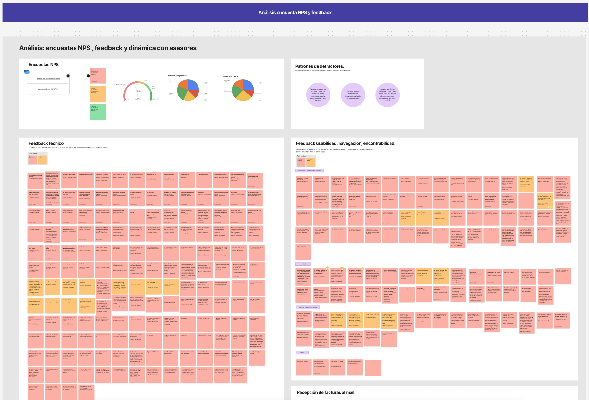
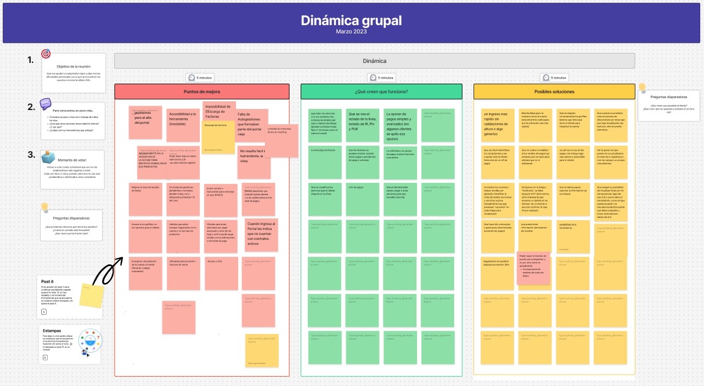
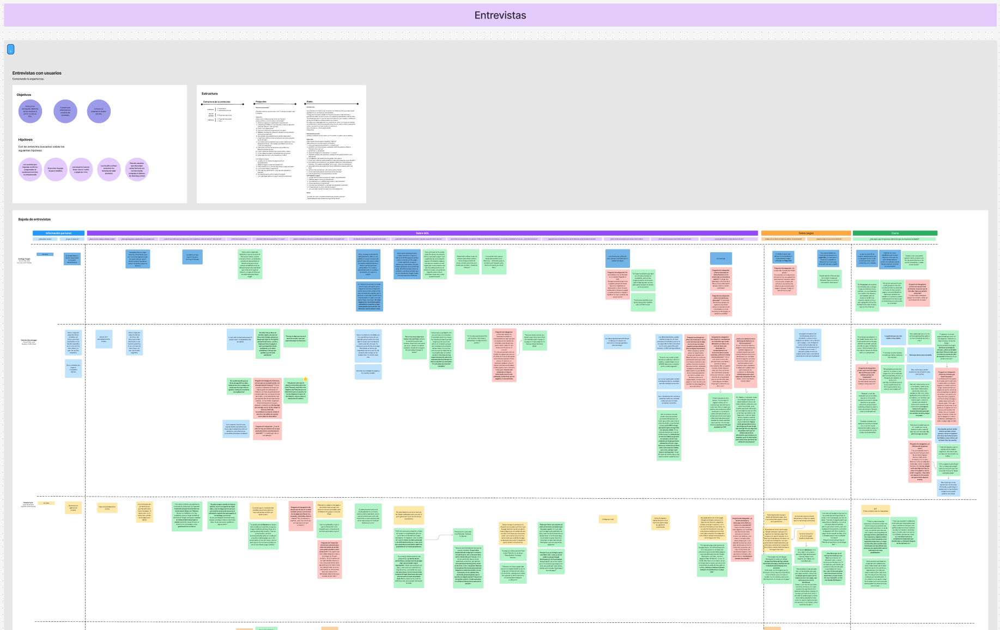

Objetivo de usuario
Resolver una gestión puntual con confianza, sin tener que aprender la estructura interna del portal.
Telecom · GOL · UX Research
Investigación y priorización para entender por qué clientes B2B abandonaban tareas frecuentes en GOL y convertían fricción digital en contacto con soporte.
01 · El proyecto
GOL es el portal B2B de Telecom para clientes con múltiples productos y contratos. Aunque reunía tareas críticas —facturas, líneas, servicios y reclamos—, un NPS de −14 y el feedback abierto señalaban dificultades para resolverlas sin asistencia.
¿Qué fricciones interrumpían la autogestión y qué cambios podían aumentar la claridad y la confianza?
Resolver una gestión puntual con confianza, sin tener que aprender la estructura interna del portal.
Detectar oportunidades para mejorar encontrabilidad, claridad y continuidad del autoservicio.
02 · Mi participación
Como UX Researcher, diseñé y conduje una investigación de seis semanas junto con UX, Negocio y Atención al Cliente. Analicé señales existentes, facilité una dinámica con cuatro integrantes de soporte, entrevisté a nueve clientes y sinteticé la evidencia en oportunidades priorizadas.
Análisis de NPS, feedback abierto, entrevistas moderadas y auditoría del recorrido.
Dinámica con soporte, triangulación de evidencia y priorización junto al equipo.
03 · Cómo lo trabajamos
La investigación combinó datos existentes, conocimiento del equipo de soporte y observación cualitativa. La triangulación permitió distinguir síntomas aislados de patrones consistentes.
Revisamos resultados, comentarios abiertos y el recorrido actual para construir hipótesis sobre navegación, claridad y rendimiento.
Una dinámica con Atención al Cliente mapeó obstáculos recurrentes, causas probables y oportunidades observadas desde el soporte.
Nueve clientes con múltiples productos o contratos recorrieron tareas reales y explicaron expectativas, dudas y estrategias.
Cruzamos lo que las personas decían, lo que el portal mostraba y lo que el negocio recibía como consultas.



04 · Lo que encontramos
Las personas debían interpretar la lógica del portal antes de encontrar una gestión. El problema no era la ausencia de información, sino su organización y nomenclatura.
Facturas, contratos activos, líneas y reclamos eran tareas recurrentes mencionadas, pero no tenían accesos tan visibles como los usuarios esperaban.
Ante estados ambiguos o caminos poco claros, las personas evitaban experimentar. Preferían contactar a soporte antes que “romper” algo.
Cuando una tarea no se resolvía rápidamente, el flujo de autoservicio se interrumpía y Atención al Cliente absorbía la consulta.
05 · Recomendaciones y evolución
El principal resultado fue una lectura compartida del problema: cuatro patrones respaldados por tres perspectivas, oportunidades ordenadas y un siguiente experimento definido. El alcance fue diagnóstico; no se atribuyen mejoras posteriores que no fueron medidas.
Organizar categorías según modelos mentales y ajustar etiquetas para anticipar qué puede hacer el usuario.
Dar acceso visible a facturas, contratos, líneas y reclamos desde la home y desde puntos contextuales.
Mejorar jerarquías, estados y microcopy para reducir incertidumbre durante la gestión.
Probar la nueva arquitectura y navegación con tareas reales antes de llevar los cambios a producción.
06 · Lo que me dejó este proyecto
Este proyecto cambió mi forma de mirar la fricción. Aprendí que la interfaz explicaba solo una parte del problema: al conectar la voz de clientes, las señales del producto y la experiencia de soporte, pudimos entender por qué una duda terminaba en contacto y orientar decisiones concretas.
Próximo paso recomendado: prototipar la nueva arquitectura, medir éxito de tarea y comparar la necesidad de soporte antes y después.